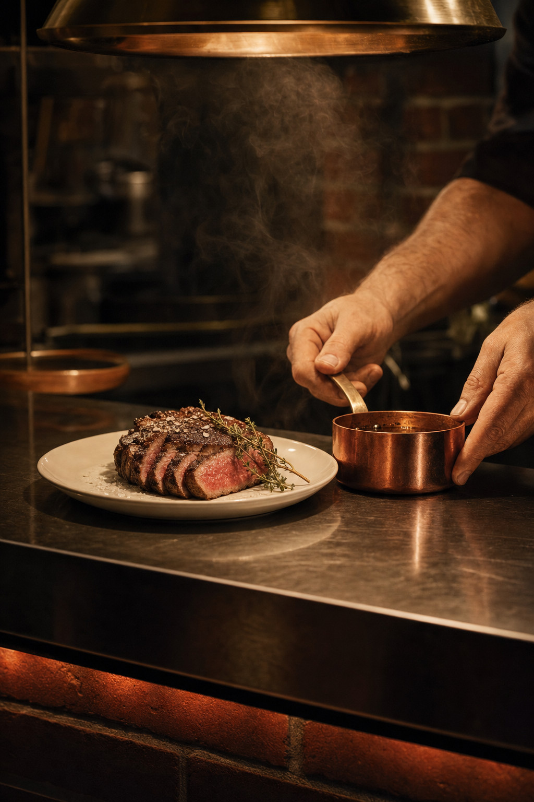
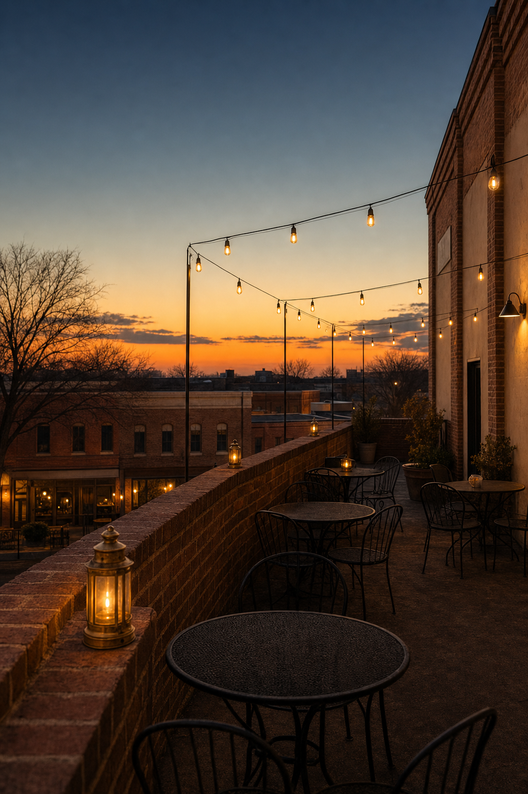

01 · Why now
One building. Three moods.
Jason, Donny — Nelson Taylor here. I direct and shoot brand content in Dallas–Fort Worth, and I read Jenna Stephenson's piece in Community Impact: 1902 opened its doors on Broadway Street on Oct. 6. Congratulations to you both, and to the whole team on the floor and in the kitchen.
Your site and the coverage fill in the rest. The name comes from the year that helped shape the town, and the building holds more than one room: an elegant main dining room, a room tucked upstairs, and a rooftop with a view. Three levels, and three different moods, under one roof.
That's a gift for a camera, because a phone sees a building one level at a time.
"This building is stunning — it's a beautiful space."
— Jason Young, as quoted in What Now Dallas
I'd work from that line. Nothing on this page asks you to change the room, the menu or the night. It walks the building as it is, from the first floor to the roof, and puts each level where a phone can see it.
02 · The idea
Every level, its own first look.
The dining room by candlelight is one reel. The room upstairs, low and quiet, is another. The rooftop as the sky turns is a third. Each has its own light, its own sound and its own reason to stop a scroll.
So the day films all three, and the edit hands you a bank you can share level by level, whenever you're ready to show each one. One day of shooting, built to run for a quarter, every cut composed 9:16 from the first setup.
One thread ties it together: a single unbroken move from a table downstairs, up through the building and out onto the rooftop. Any level's reel can open or close on it, so the whole bank reads as one place.

03 · The shot list
The album.
One day, on a day that suits the team, from before service to last light. Six setups, one building, mounted like cards on a single page. Hands, plates, light and empty rooms only.
-
No. 1 · the room, setCreative direction — treatment frames, not final footage. No. 1 · before serviceThe room, set
The main dining room laid and lit: linen, crystal, brass, candles going on one by one, the brick catching the last of the afternoon. Wide and slow on the FX6, composed 9:16.
-
No. 2 · at the passCreative direction — treatment frames, not final footage. No. 2 · as service startsAt the pass
A steak resting and plated, pasta finished, the Texas redfish on its way out. Hands only, steam, sound on.
-
No. 3 · the table, litCreative direction — treatment frames, not final footage. No. 3 · early serviceThe table, lit
The detail reel: a plate set down, a fork laid straight, a candle flame moving behind its glass, brass under warm light.
-

No. 4 · the way upCreative direction — treatment frames, not final footage. No. 4 · between setupsThe way up
One unbroken move from the first floor to the second, however the building takes you there. It's the thread that ties every level together.
-
No. 5 · the room upstairsCreative direction — treatment frames, not final footage. No. 5 · before anyone's up thereThe room upstairs
Low light, the texture of the room, the quiet. The room itself is the subject, filmed close and slow.
-
No. 6 · the rooftop at duskCreative direction — treatment frames, not final footage. No. 6 · last lightThe rooftop at dusk
Last light over Old Downtown: empty tables, the sky going from gold to blue, the first lights coming on.
Alongside the video, the A7RV pulls stills from every setup, so the same day also fills a stills bank for the site, the grid and press requests.
04 · Upstairs
The room upstairs.
Community Impact and Dallas Express both place Mary Ann's on the second floor. On camera, I'd treat it as its own world: low light, texture, the hush of a room before anyone arrives.
The room itself is the subject, slow and close on the cinema camera, so the reel shows anyone choosing where to spend an evening exactly what they'd be walking into.
It gets its own first look in the bank, ready whenever you'd like to show it.
05 · The scope
Just the day.
Five lines, no small print.
- iOne shoot day at 1902I direct and shoot it myself, on a day that suits the team, from before service to last light.
- iiSony FX6 + Sony A7RVThe FX6 carries the motion; the A7RV handles stills and hybrid.
- iiiVertical-firstEvery deliverable is cut 9:16 for Reels, TikTok and Shorts.
- ivAn edited set of vertical videos + a stills bankFrom the same day, in the same light, built to run for a quarter.
- vTwo rounds of editsTurned around in about two weeks.
Your team stays off camera unless they'd like to be on it, and guests appear only as hands, with releases a conversation. Everything else we'd talk through on a call.
06 · Behind the camera
Who's shooting.
I'm Nelson Taylor, and Taylormade Creative is my studio in Dallas–Fort Worth. Fourteen years of design and creative direction sit behind this page. These days most of that work is brand content: I direct it, shoot it on the FX6 and the A7RV, and edit it myself.
Brand-content work includes TONI&GUY Academy, It's a Secret Med Spa and Dreamcatchers Hair. Client work has included Toni & Guy, Lava Cantina, KFC, IAS Academy and Curls, and I shipped one iOS app, Run It UP! Dallas. Because the person framing the shot is the person cutting it, the plan on this page is the edit you'd get.
- Fourteen yearsdesign and creative direction
- FX6 + A7RVmotion and stills, one kit
- One personfrom the first frame to the final cut
07 · Whenever suits
No hurry at all. Nothing on this page needs an answer soon.
Opening weeks are full, so treat this page as something to open once things settle. If it feels like 1902, I'd be glad to spend twenty minutes on a call, walk you through the six cards, and hear which ones sound like you and which to strike.
And if the timing is wrong, "not yet" is a perfectly good answer. Either way, congratulations on the opening, to you both and to the whole team.
Write to NelsonFounder & Creative Director · Taylormade Creative
(817) 707‑1291 · taylormademd@gmail.com
www.taylormadecreative.net · @taylormade_creative